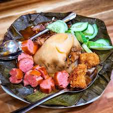

Bánh giò
Cái thứ bánh bình dân, giá cũng bình dân và hàng quán cũng thật bình dân này có thể tìm thấy ở nhiều góc phố, đặc biệt tại những nơi có mật độ giao thông cao như chợ, trường học hay công sở.
Không chỉ có tại hàng quán cố định ven đường, bánh giò còn được những người bán rong mang đi khắp hang cùng ngõ hẻm của Thủ đô. Không biết từ bao giờ lời rao “Ai bánh giò nóng đây” đã đi vào tiềm thức của mỗi người dân với hình ảnh người bán bánh trên chiếc xe đạp cũ, đằng sau là một chiếc giỏ hay thúng ủ kín với những chiếc bánh nóng hổi. Cứ thế tiếng rao bánh văng vẳng qua từng con phố nhỏ.
Nguyên liệu cần chuẩn bị:
300 gram thịt heo băm
20 gram mộc nhĩ
Dầu ăn, nước mắm, bột canh
Hành tím, hành tây
400 gram bột gạo trắng
50 gram bột năng
Nước xương lợn, lá dong hoặc lá chuối
Các bước thực hiện:
*Làm vỏ bánh giò
Bước 1: Đổ từ từ nước hầm xương vào 400 gram bột gạo trắng. Cân chỉnh lượng nước hầm xương sao cho trộn với bột
để tạo thành hỗn hợp sánh mịn, không quá nhão cũng không quá khô.
Bước 2: Cho hỗn hợp bột ở bước 1 vào một nồi nhỏ. Sau đó, cho lên bếp đun với mức lửa nhỏ. Vừa đun, bạn vừa dùng
đũa khuấy đều để bột không bị vón cục. Khi bột có màu trắng đục và sánh lại thì dừng khuấy và tắt bếp.
*Làm phần nhân
Bước 1: Hành tím và hành tây bạn bóc sạch lớp vỏ khô bên ngoài, rửa sạch rồi dùng dao băm nhỏ. 20 gram mộc nhĩ
đem ngâm trong nước khoảng 15 – 20 phút cho nở mềm rồi băm nhỏ.
Bước 2: 300 gram thịt heo băm bạn đem ướp với chút bột canh và nước mắm.
Bước 3: Chuẩn bị một chảo nhỏ, đổ 1 ít dầu ăn vào đun sôi rồi cho hành tím vào phi thơm. Sau đó, cho thịt, hành
tây, mộc nhĩ vào chảo đảo đều đến khi thịt săn lại thì dừng và tắt bếp.
*Gói và luộc bánh giò
Bước 1: Lá chuối bạn cuộn thành hình phễu. Sau đó, cho ít phần bột làm vỏ bánh vào. Tạo ở giữa một hốc nhỏ rồi
cho nhân vào và phủ thêm 1 ít bột làm áo lên rồi gói thành hình tam giác và dùng lạt buộc chặt lại.
Bước 2: Chuẩn bị một nồi hấp. Xếp bánh vào rồi bắc lên bếp đun trong chừng 30 phút. Sau đó, đem ra đợi nguội và
dọn ra cùng tương ớt, nước chấm, nộm dưa leo và mời mọi người cùng thưởng thức.